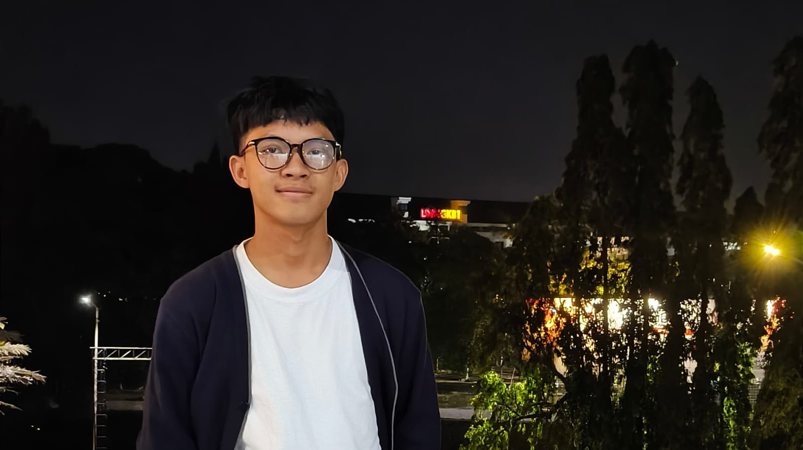
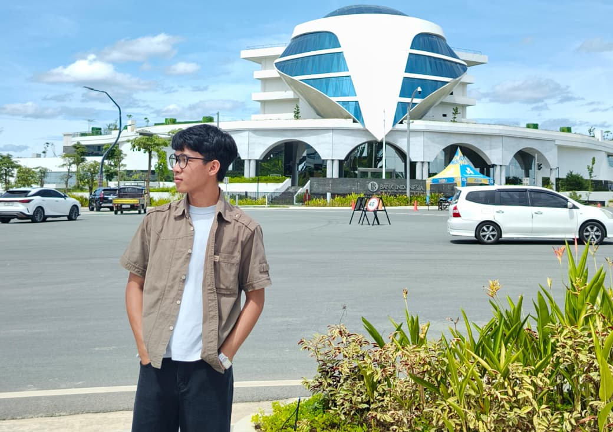
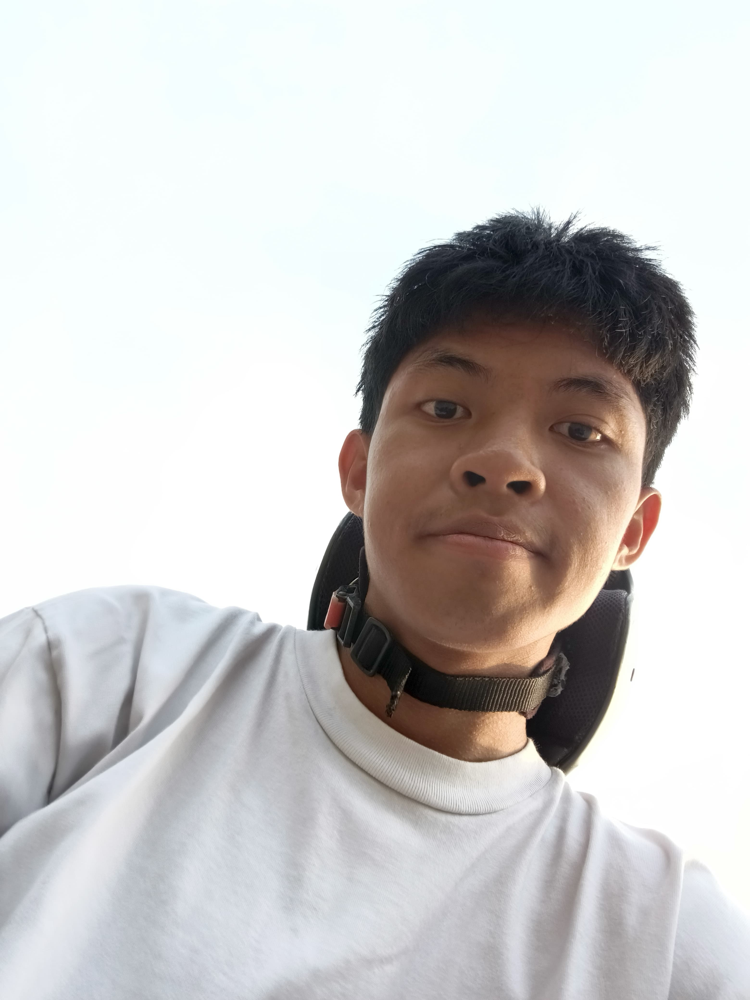
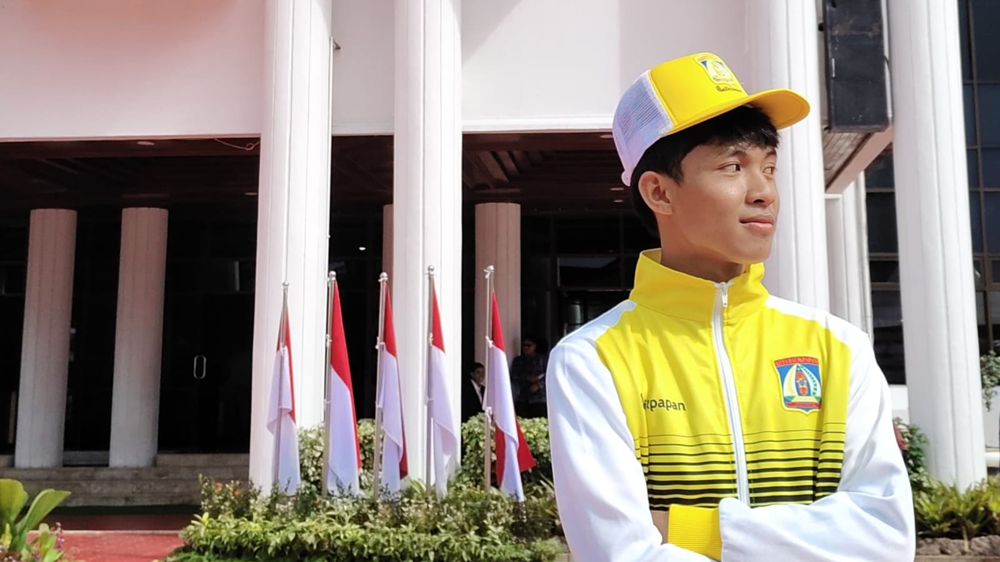
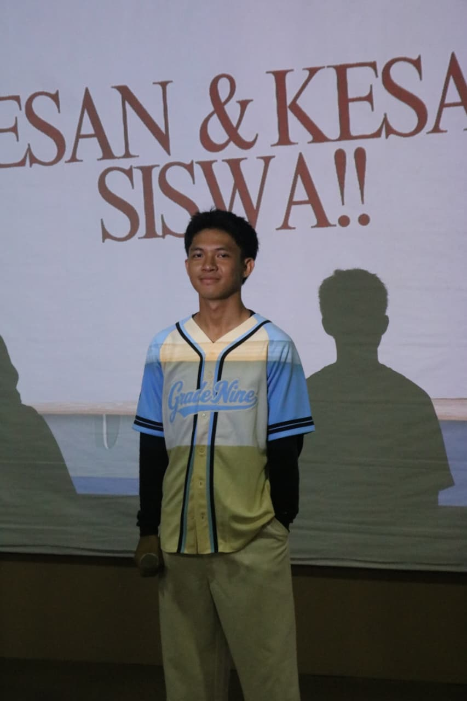

Little things
Yang disukai
- Musik
- Here With Me, Seasons, Love, If Only, 24/7
- Makanan
- Nasi goreng, sate, dan nasi bakar
- Film
- 5 Centimeters per Second, A Silent Voice, Your Name
- Hobi
- Fotografi Dan Writing
Hello, welcome
Muhammad Aufar Luthfan Ilmiansyah, siswa SMK Negeri 1 Balikpapan dari Jurusan Rekayasa Perangkat Lunak.

“Be yourself.”
Quote of the day
Sedikit cerita tentang perjalanan dan hal-hal sederhana yang membuatku tumbuh.

Little things
The Journey
Beberapa eksplorasi visual, kode, dan tugas yang sedang atau pernah kukerjakan.

Web Development
Fokus mematangkan fundamental HTML dan CSS (seperti integrasi layout navigasi), menjelajah sosial media tentang coding dan memcoba berbagai vibecoding project dengan bantuan AI Assistent
Fotografi & Design
Minat pada street photography, landscape, potrait, dan suka menorehkan cerita dalam sebuah potret. Suka bermain dengan color grading di Lightroom, mengejar tone teal and orange bergaya film sinematik dan berbagai macam style
Writing
Suka menulis dan mengetik kisah kehidupan atau hasil jurnalistik kedalam rangkaian kata indah, terinspirasi dari orang orang sastra yang dapat membuat syair indah dan banyak karya puitis.
Dedikasi, kompetisi, dan sertifikasi yang pernah aku capai sejauh ini.
Sertifikasi & Pelatihan

Kompetisi
Berhasil lolos seleksi tim IPSI Balikpapan untuk mewakili Kejurda Open Tournament Samarinda 2025, dan POPDA XVII Kaltim 2026 di PPU
Punya ide proyek, tawaran kerja sama, atau sekadar ingin menyapa? Jangan ragu mengirim pesan.
Kirim Pesan
